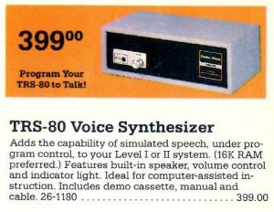

To Make This Computer Speak, You Wrote On Its Screen
In 1979, Radio Shack built a speech synthesizer with no API, no port, and no command set. To make it talk, you wrote secret codes directly into video memory — and watched the words appear as they were spoken.
There are peripherals with a command set. There are peripherals with an API. And then there is the TRS-80 Voice Synthesizer, a beige box that Radio Shack sold in 1979 for $399, which had neither. It had something much stranger: it watched your screen.
Specifically, it monitored thirty-two bytes of video memory — the right half of the bottom line of the TRS-80's sixty-four-character display. Whatever ASCII characters appeared between two question marks in that narrow strip of screen real estate, the synthesizer would attempt to speak aloud. Not as English. As phonemes.
To say "compute," you would type:
PRINT@992,"?K6MPY(UT?";
And the box would read the characters from screen memory and produce, through a potted epoxy brick containing a Votrax SC-01-A chip, something like kuhm-pyoot. The K was the hard K sound, 6 was UH1 (the vowel in "but"), M was M, P was P, Y was the Y-glide, ( was OO (as in "boot"), and T was T. If you got any of these wrong — if you typed U instead of ( — you would hear something distinctly unlike English.

The secret code
There is something almost cryptographic about the TRS-80 Voice Synthesizer's phoneme table. Sixty phonemes, each mapped to an arbitrary ASCII character. A was the short A in "bat." E was the long E in "beet." So far, reasonable. But then: 6 was UH1. $ was TH. + was NG, as in "sing." & was ZH, the sound in "measure." Learning to program speech on this machine meant internalizing a mapping that looked, to the uninitiated, like line noise.
This was not a bug. It was a design constraint that became a design philosophy. The TRS-80 Model I had no standardized peripheral bus for sending commands. It had memory-mapped video, which meant the CPU could write to screen positions by writing to specific RAM addresses. The engineers at Radio Shack — or more precisely, at Votrax, the Michigan company whose SC-01-A chip was the heart of the system — realized that if the synthesizer simply "paralleled" a slice of video memory, any BASIC program could drive it with a single PRINT@ statement. No interrupts. No I/O port addressing. No assembly language. Just put the right codes on the screen and the box would speak them.
The result was an interface that made its inner workings entirely visible. Literally. As the synthesizer spoke, you could see the phoneme codes sitting on the bottom line of the CRT. Debugging speech was not a matter of listening carefully and guessing — it was a matter of looking at what you'd typed and matching it against a phoneme chart. The screen was both the input channel and the diagnostic display.
No text-to-speech. No abstraction.
This is the part that might feel most alien to someone who has only ever used Siri or Alexa. The TRS-80 Voice Synthesizer had no text-to-speech engine. None. If you wanted it to say a word, you had to decompose that word into phonemes yourself, manually, using the cryptic ASCII mapping table. Every. Single. Word.
This put speech synthesis in the same cognitive category as assembly-language programming. There were no libraries, no helper functions, no "speak('hello')" convenience. Programming speech meant learning phonetics. It meant understanding that the word "strength" contains the NG sound (the + character), that "judge" begins with a D followed by ZH (the & character), that the difference between "bit" and "beat" is a single phoneme substitution.
Radio Shack sold exactly one dedicated software title for the device: Talking Eliza, a speech-output version of the classic chatbot. A handful of third-party programs supported it — a space shooter called Hyperlight Patrol, a version of Star Trek — but the unit was fundamentally a hobbyist's peripheral. You bought it not to run existing software but to make your own computer speak, one phoneme at a time.
That it lasted four years in Radio Shack's catalog (1979–1983) is a small miracle. That no version was ever made for the TRS-80 Model III is less surprising: by 1983, the idea of mapping a speech synthesizer onto video memory was already a historical curiosity.
The visible voice
I keep coming back to that image: phoneme codes sitting on the screen while the voice speaks them. It is such a strange, lovely, irreproducible moment in interface design. A speech synthesizer whose workings you can see. A peripheral that reads your screen instead of your commands. A device that makes speech production — the tongue, the glottis, the breath — visible as a string of cryptic characters on a green CRT.
Modern speech synthesis has become so good we no longer think about phonemes. You type English, the computer speaks English, and the mapping happens somewhere in a neural network whose internals no human will ever inspect. That is a triumph of engineering. But there is something about the TRS-80 Voice Synthesizer that neural networks can never give you: the sense that you understood, exactly and completely, what the machine was doing when it spoke. That you had placed each phoneme there yourself, in the right order, on the right part of the screen, and the voice that emerged was yours in a way that no API call could ever replicate.
PRINT@992,"?K6MPY(UT?"; It said compute. And you knew exactly why.